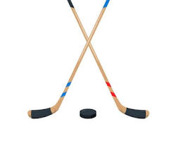
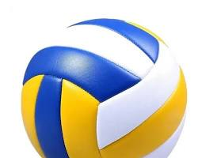

Esportes Mais Populares do Mundo
| Posição | Esporte | Espectadores | Imagem |
|---|---|---|---|
| 1 | Futebol | 3,5 Bilhões |  |
| 2 | Críquete | 2,5 Bilhões | |
| 3 | Hóquei | 2 bilhões |  |
| 4 | Tênis | 1 Bilhão |  |
| 5 | Vôlei | 900 Milhões |  |
| 6 | Tênis de mesa | 850 Milhões | |
| 7 | Basquete | 800 milhões |  |
| 8 | Beisebol | 500 Milhões | |
| 9 | Rúgbi | 475 Milhões | |
| 10 | Golfe | 450 Milhões |
Recordes Olímpicos Notáveis
-
Natação
Recordista: Michael Phelps (EUA)
Recorde: Maior medalhista olímpico da história, com um total de 28 medalhas (23 de ouro, 3 de prata e 2 de bronze).
-
Atletismo
Recordista: Usain Bolt (Jamaica)
Recorde: Único atleta a vencer os 100m e 200m rasos em três Olimpíadas consecutivas (2008, 2012 e 2016).
-
Basquete
Recordista: Seleção Masculina dos Estados Unidos
Recorde: Mais pontos em um único jogo, marcando 156 pontos contra a Nigéria em Londres 2012.
-
Futebol
Recordista: Cristiane (Brasil)
Recorde: Maior artilheira da história do futebol olímpico (masculino e feminino), com 14 gols.
-
Vôlei
Recordista: Serginho - Sérgio Dutra Santos (Brasil)
Recorde: Atleta de vôlei de quadra com mais medalhas olímpicas (2 ouros e 2 pratas).
-
Tênis
Recordista: Venus Williams (EUA)
Recorde: Tenista com o maior número de medalhas olímpicas, totalizando cinco (4 ouros e 1 prata).
-
Tênis de Mesa
Recordista: Ma Long (China)
Recorde: Único homem a conquistar o "Super Grand Slam" duas vezes e detentor de cinco medalhas de ouro olímpicas.
Curiosidades Olímpicas
O Significado das Cores dos Anéis Olímpicos
As seis cores (azul, amarelo, preto, verde, vermelho e o branco do fundo) foram escolhidas porque, na época da sua criação (1912), pelo menos uma delas estava presente na bandeira de todos os países do mundo.
Arte já foi um Esporte Olímpico
Entre 1912 e 1948, as Olimpíadas concediam medalhas para competições de arte, incluindo arquitetura, literatura, música, pintura e escultura.
O Prêmio Original dos Campeões
Nos Jogos da Grécia Antiga, os vencedores não recebiam medalhas de metal. O prêmio máximo era uma coroa feita com ramos de oliveira, um símbolo de honra e glória.
Cabo de Guerra nas Olimpíadas
Pode parecer inusitado, mas o cabo de guerra foi um esporte olímpico oficial em cinco edições dos Jogos, de 1900 a 1920. A Grã-Bretanha foi a maior campeã da modalidade.
Vídeo com outras curiosidades
Curiosidades Olímpicas que você provavelmente não sabia!